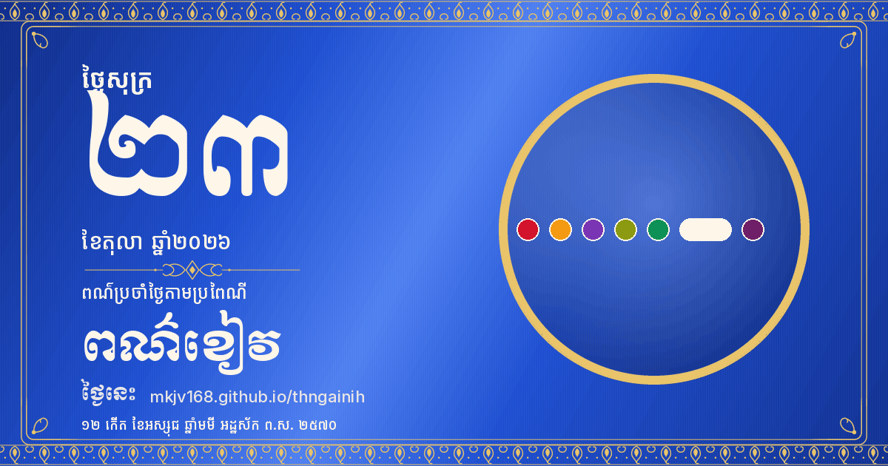

Friday, 23 October 2026
ថ្ងៃសុក្រ ទី២៣ ខែតុលា ឆ្នាំ២០២៦
១២ កើត ខែអស្សុជ ឆ្នាំមមី អដ្ឋស័ក ព.ស. ២៥៧០
12th waxing day of Assoch · Year of the Horse · B.E. 2570
Traditional weekday colour: Blue / ពណ៌ខៀវ
Next public holiday: King Norodom Sihamoni's Coronation Day in 6 days (2026-10-29)
ថ្ងៃឈប់សម្រាកបន្ទាប់៖ ទិវាគ្រងរាជ្យសម្បត្តិ នៅសល់ 6 ថ្ងៃ (2026-10-29)
Sub-Decree 167/198 ANKr.BK